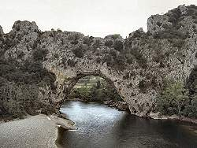

Natural Bridge
|  |
| Image: Pont d'Arc, Ardeche, France, view from the West. |
{kind=link}
 |
| Image: Pont d'Arc, Ardeche, France, view from the East. |
Definition: A natural arch, bridge or tunnel is a void beneath still standing bedrock, usually of short extent, and allowing human passage from one end to the other, at least part of the time. The other entrance/other side is visible from each side.
A natural arch is an arch of rock formed by erosion (weathering) from the bedrock.
A natural bridge is a bridge of rock typically spanning a ravine or valley and formed by the erosion of a former cave.
A tunnel is a nearly horizontal cave open at both ends, fairly straight and uniform in cross-section.
As you can see, this definition is rather vague, which is actually a result of the bandwidth of different forms existing in nature. The definition tries to classify them in a way which is easy to understand and simple to determine. This is rather hard, because there are no numeric, measurable criteria. Even to measure the width, height, and length of an arch can get very complicated. See the link to the The Natural Arch and Bridge Society below for more details and examples. And if you read their definitions and then the wikipedia page, you will see that there are numerous different definitions.
On showcaves.com we decided to classify above three types as natural bridge. They all must go through a rock or cliff, which means two entrances and an (almost) horizontal cavern/passage.
 |
| Image: Veliki naravni most, a natural bridge in the Rakov National Park near Postojna in Slovenia. |
The difference between natural bridges and arches is their formation or genesis.
- Arches - like in Arches NP in USA - are formed by multiple erosive processes, like fluvial erosion (flowing water, rivers), frost erosion and wind erosion. They may be formed in not soluble rocks like basalt or sandstone, but also in limestone. The relevant aspect is, that it is formed as an arch.
- Natural bridges and tunnels are the ruins of caves. They are formed by all processes which form caves plus ongoing erosion destroying the cave until only the bridge remains. The relevant aspect is, that it is formed as an cave.
The following explanation focusses on the second type, the natural bridges:
In large cave systems collapses are very common. Very often they result in domes that are optimal to stand the pressure of the overlaying rocks. Sometimes the caves are large and very close to the surface, so the ceilling gets too thin and collapses. As erosion goes on, the collapsed rooms are widened to small valleys with a river, the former cave river. The valleys grow larger, the connecting cave remains get shorter.
Sometimes the remaining caves are short enough, to see the other end and the next valley. This may be the time to call them tunnel. If the destruction continues, and there is no part left where the daylight does not reach, we call it natural bridge.
Natural Bridges on showcaves.com
- See also
 Natural arch - Wikipedia, the free encyclopedia,
(visited: 18-SEP-2014)
Natural arch - Wikipedia, the free encyclopedia,
(visited: 18-SEP-2014) The Natural Arch and Bridge Society,
(visited: 18-SEP-2014)
The Natural Arch and Bridge Society,
(visited: 18-SEP-2014)- (44) The Natural Arch and Bridge Society,
(visited: 18-SEP-2014)
- HowStuffWorks "Natural Arch and Natural Bridge",
(visited: 18-SEP-2014)
- Nature's Arches & Bridges,
(visited: 18-SEP-2014)
- 10 Largest Natural Arches in the World | Amusing Planet,
(visited: 18-SEP-2014)
- 10 Incredible Natural Bridges and Arches (PHOTOS) - weather.com,
(visited: 18-SEP-2014)